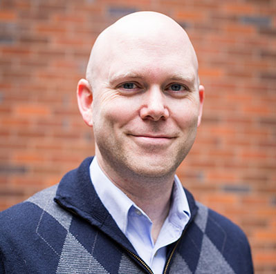

I am a Full Professor and School Director of the School of Planning, Public Policy and Management at the University of Oregon, and an Associate Faculty member at the Knight Campus for Accelerating Scientific Impact.
My research sits at the intersection of local government management, public finance, and technology. I study how governments budget and adapt under pressure — from police-involved shootings to wildfire recovery — and how citizen engagement, data systems, and emerging technologies reshape the relationship between government and the people it serves.
I co-founded the Oregon Policy Lab in 2018 to bridge rigorous academic research and real-world public policy challenges. I am always open to collaboration — academic, applied, or both.
Credit ratings, budgeting, financial condition, and the fiscal impacts of policy decisions on municipalities.
311 systems, crowdsourcing, and how digital tools mediate citizen participation in public service delivery.
Agile government response, smoke health interventions, and IoT monitoring of air quality outcomes.
Autonomous vehicles, ride-hailing services, parking revenue, and the future of transportation finance.